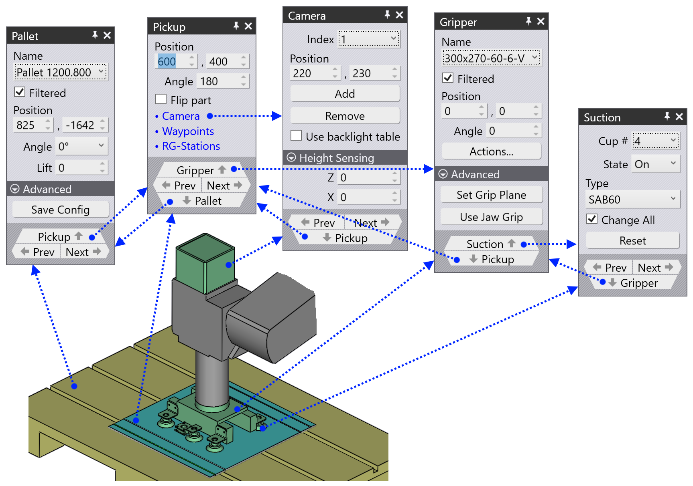
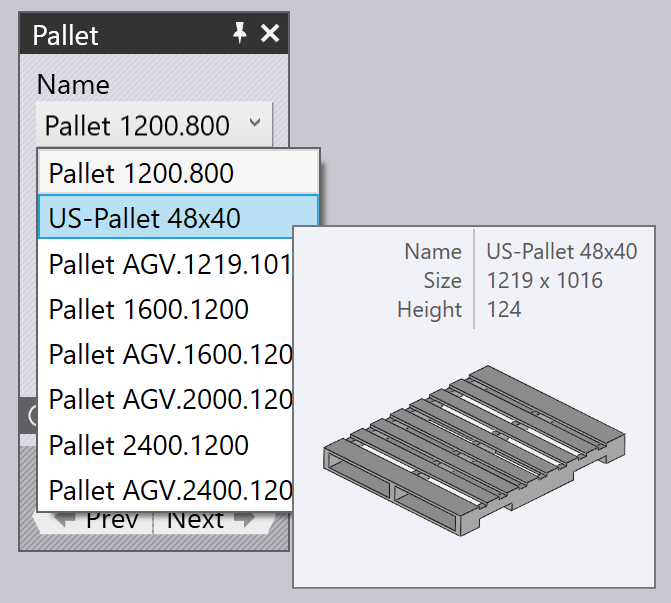
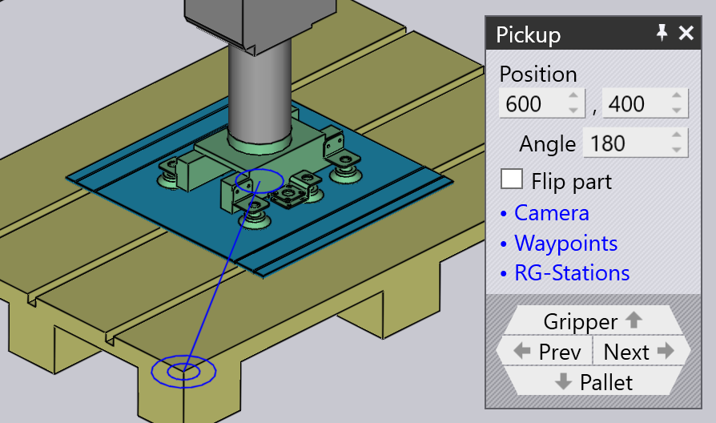
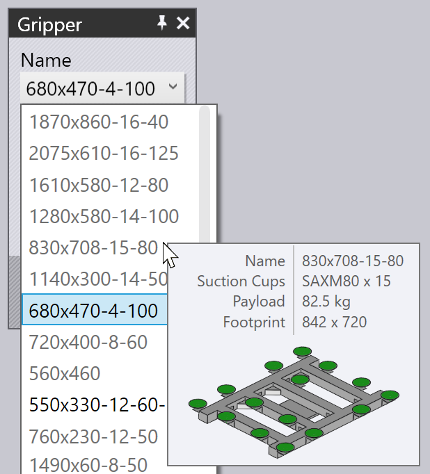
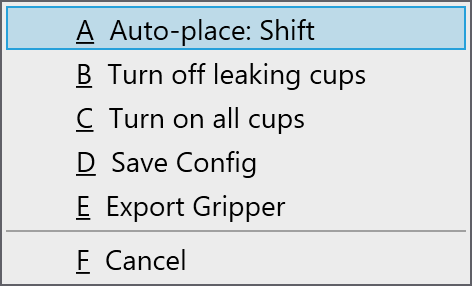
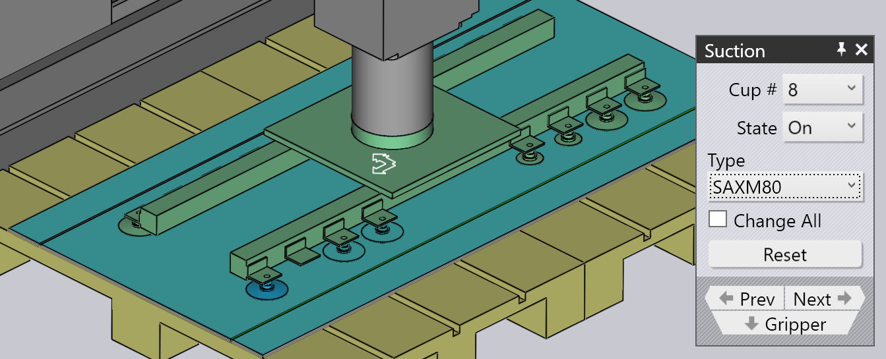

パレットからピックアップ
サクショングリッパーや磁気グリッパーを使用すると、ブランク材（平らなパーツ）は_ パレット_からピックアップされます。これらのパラメータは、このプロセスに影響しま す。
-
マシンセルのパレット位置。
-
パレット上のパーツスタックの位置と回転方向。
-
パーツ上のサクショングリッパーの位置と回転方向。
-
グリッパーのサクションカップ設定（どのカップがオン/オフになっているか、 各ソ ケットにはどのようなタイプのカップが取り付けられているか）。
-
ロボット上カメラで_撮影さ_れ、パーツ位置キャリブレーションの基準として使用され るパーツ領域。
これらすべての設定の編集に使用すパネルは以下に表示されています - それはすべて 上下ナビゲーションリンクで論理的な順序に相互に接続しています：

上の画像が示すように、シミュレーションのさまざまなオブジェクトをクリックするだけ で、これらのパネルに簡単にアクセスできます
-
パレットパネルを開くには、パレットをクリックします。
-
パレット上のパーツスタック（ピックアップパネル）を編集するには、パレット上 のブランクをクリックします。
-
ブランク上のグリッパー位置を編集するには（グリッパーパネル）、グリッパーを クリックします。
-
グリッパーのサクションカップ設定を編集するには（サクションパネル）、サク ションカップのいずれかをクリックします。
-
（精密検出システムで使用する）_撮像_位置を編集するには、カメラをクリックし ます。
パレットパネル
パレットパネルで、パレットを選択してセル内に配置します。パレットをクリックす るだけでこのパネルが開きます；フラックスは、ロボットがパレットからパーツをピック アップする点に来るように、シミュレーションタイムラインも位置決めします。

-
Name 選択肢で、別のパレットを選択します。通常、このブランクに使用 可能なパレットのみがリストされますが、Filteredチェックをオフに すると、すべての利用可能なパレットがリストアップされます。
-
名前リスト上でマウスを名前に重ねると、そのパレットの簡単な概要とサムネイルが表 示されます：

-
Position入力で、パレットをZおよびX（セル座標）に位 置決めし、Angle入力でパレットを回転します。パレットを移動したり回 転したりすると、パレットのパーツスタックおよび グリッパー/ロボットもすべてその動 きに追従します。
-
NextおよびPrevボタンで、セル内の_他の_パレットに移動 します；たとえば、パーツ収納ファンクションのパレット。
-
Pickup ナビゲーションボタンで、 パレットのパーツスタック位 置を編集します。
-
Advancedセクション下のSave Configボタン で、このセル設定（すべてのパレットを含む）をこのマシンの初期設定として保存しま す。
ピックアップパネル
ピックアップパネルで、パレット上のパーツスタックの位置を編集します。パレット のブブランク材スタックをクリックすると、このパネルが開きます。 （パレットパネル からPickupリンクを使用してもアクセスできます）。

-
Position 入力でスタックをパレットに位置決めします；これらの 座標は、パレットのコーナーを基準とし、パレットのローカル座標系におけるパーツ中央 のZおよびXの位置を指定します。
-
Angle 入力で、パレット内でパーツを回転します。
-
Flip part スイッチで、パーツを裏返します。これは、通常、最 初の曲げ加工前にさらに_つかみ換え_が必要なことに注意して下さい（TecZone Bendが、こ れを自動的に追加します）。
-
Camera リンクでカメラパネルに切り替え、 ピックアップの画像 認識フェーズを設定します。
-
Waypoints リンクでウェイポイン トエディタを表示し、 ピックアップ中のロボット走行路を微調整できます。
-
RG-Stationsリンクからつかみ替 えステーションパネルを表示し、ピックアップ操作中のつかみ換えステーション位置を 設定します。
パーツがパレット上を迂回しても、グリッパーはパーツに_固定_したままで、ロボットは その動きに追従します。
グリッパーパネル
グリッパーパネルで、別のグリッパーを選択したり、グリッパーがパーツをピック アップする位置や向きを変更します。

-
Name 選択肢で、別のグリッパーを選択します。通常は、このパーツに適 したグリッパー（グリッパーのサイズや可搬重量に基づいて）のみが表示されます が、Filteredチェックをオフにすると、すべてのグリッパーがリスト アップされます。
-
グリッパーリストでマウスを名前に重ねると、そのグリッパーの簡単な概要とサムネイ ルが表示されます：

-
Position入力で、グリッパーの中央を移動してパーツ中央との位 置関係を調整し、Angle入力で、グリッパーを回転し、パーツ回転方向と の位置関係を調整します。
-
Suctionリンクで、グリッパーの_詳細編集_に切り替えます（異 なるサクションカップの選択やカップのオン／オフ）。
-
Set Grip Plane ボタンで、グリッパーを別の面に位置決めしま す。通常、モデルの最大面を使用して、グリッパを位置決めします。これを変更したい場 合は、このボタンをクリックしてください。次に、 グリッパーを配置する面をクリック します：

-
Use Jaw Gripperボタンで、パーツに代わってパーツディスペン サーおよびジョーグリッパー（機械式グリッパー）の使用に切り替えます。 ピックアッ プから収納までの曲げサイクル全てのステージは、ジョー [1]の作業サイズ範囲 にまたがるパーツについてのみ利用可能です。
サクション警告
グリッパーが移動し、いくつかのサクションカップが材料の外に出たり、パーツ開口部に 配置された場合、それらのカップがハイライト表示され、 次の画像に示すように、ナ ビゲーターのピックアップ列エラーが表示されます：

アクションメニュー

アクションボタンで、グリッパーの有用なアクションのメニューを呼び出します。
-
Auto-place: Shiftは、グリッパーをパーツ上に再配置し、すべて のサクションカップがパーツ内に収まり、（可能なら）開口部の上にならないように位置 調整を試みます。
-
Turn off leaking cups：開口部上、またはpart[2]。
-
Turn on all cups：オフになっているすべてサクションカップを オンにします。
-
Save Config：サクションカップをオフにしたり、いくつかのサク ションカップを取り外したり、アーム長さや角度を変更して（形状を変更できるマルチグ リッパーの場合）、グリッパーを_設定_した場合、それを再利用するために、変更後の設 定に新しい名前をつけて保存できます。
-
Export Gripper：現在のグリッパーを.fxbgripファイルとして 保存すると、TecZone Bendの別のインストールにインポートできます。これは、カスタムグ リッパーをインポートし、他のインスタレーションと共有する必要がある場合に便利で す。
サクションパネル
サクションパネルで、グリッパーのサクションカップレイアウトを設定します。この パネルを開くには、サクションカップをクリックするか、グリッパーパネルからサク ションリンクを選択します。

-
Cup #選択で、グリッパーの特定サクションカップを選択する か、NextおよびPrevボタンでサクションカップ間を移動しま す。選択したサクションカップは青色でハイライトされ、 編集できます。
-
サクションカップごとに、Stateをオン、オフ、または取り外しに設 定できます。詳細については、以下の説明を参照してください。
-
Type パネルで、別のタイプのサクションカップに変更します。 通常、グリッパーのすべてのサクションカップを新しいタイプに交換します が、Change Allボタンをオフにしてサクションカップを交換すると、 サクションカップを組み合わせて使用できます。（この際、グリッパ フレームに取り 付けられたすべてサクションカップの動作高さが同じ必要があるため、サクションカッ プの選択に制約があることに注意してください)。上の画像では、サクションカップ 2 つが小さいもの (初期設定の SAXM80 ではなく SAXM50) に取り替えてあります。
-
Reset ボタンで、グリッパーを元の状態に戻します - すべての サクションカップがオンで、グリッパー規定の初期設定に戻っています。
サクションカップ初期設定状態はオンで、サクションカップが真空ラインに接続さ れ、持ち上げを助けます。サクションカップがパーツ開口部上の場合は、状態をオフ に変更できます。つまり真空ではなくなります。(これでグリッパーの揚力が減少し、揚 力の中心が変わります。フラックスはこれを考慮しグリッパーの容量チェックを行いま す)。なお、カップはフレームに取り付けられたままなので、引き続き衝突チェックの対 象になります。フラックスは、オフになったサクションカップをワイヤーフレームとして 表示します。上の画像にある2つのサクションカップがその例です。
最後に、サクションカップ取り外し済みに設定できます。これは、実際にマシンから そのカップが取り外されることを意味します。このカップには揚力はなく、衝突しませ ん。これは、カップが成形領域上に落下したり、加工工程中にダイやマシンテーブルと 衝突したりする場合に有効です。
カメラパネル
ピックアッププロセスには、カメラが1枚以上の画像をとらえ、それらの画像を使用して パーツのパレット上の正確な位置を推定する画像処理システムが必要です。ロボットの搭 載カメラをクリックするか、ピックアップパネルのカメラナビゲーションボタン を選択すると、カメラパネルが開きます。フラックスは、シミュレーションで、ロボット が画像を撮影するのに必要な姿勢になるよう自動的に配置します：

-
Indexリスト（またはNextとPrevボタン） で、このパーツに使用されている様々な微細認識画像を切り替えます。これを行うと、フ ラックス はオレンジ色のアウトラインを表示し、パーツの画像認識ゾーンを示します （上の画像を参照）。
-
Position入力で、この認識ゾーンをZ方向およびX方向に 再配置し、認識精度を高めるための特徴（角、小さな開口部ノッチなど）を含むように調 整します。
-
Add追加ボタンで、認識画像を（最大4枚まで）追加します。ま た、Removeボタンで、現在の認識画像を削除します。パーツのピック アップシミュレーション中、フラックス はロボットが各認識エリアへ移動し、カメラを 下に向けて画像をとるために一時停止する様子を表示します。
-
Use backlight tableスイッチがオンな場合、カメラ撮影前に、 パーツは照明付きテーブルへ移動します。これでコントラストが向上するので、反射性の 高いパーツに有効です。TecZone Bendは、自動的にバックライトテーブルを追加し、ピック アップパレットの近くに配置しますが、その後、それをクリックすると位置を調整できま す：